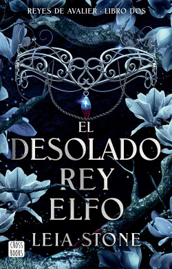

Avalier 2. El desolado rey elfo

Temáticas: juvenil
A partir de 16 años
Publicación: enero de 2025
autor: Leia Stone
sinopsis
Era plenamente consciente de que no podría pagar nunca el
préstamo que pedí para poder salvar a mi tía enferma, pero aun
así debía hacerlo. Para devolver mi deuda fui vendida como
esclava, pero se me envió a la corte del Rey Elfo y me convertí
en su ayudante.
El Rey Elfo es rico, extremadamente guapo y brillante, por lo
que encontrar a alguien para que se case con él no debería ser
complicado. El único problema es que rechaza a todas las
candidatas, lo cual dificulta mi trabajo como su asistente.
Cuando me propone un matrimonio falso para quitarse al
consejo de encima, no puedo negarme: con una guerra
cerniéndose sobre el reino, y tras descubrir mi naturaleza
mágica, es mi única esperanza de sobrevivir.
Formar un matrimonio de conveniencia con el Rey Elfo para
conseguir protección no debería ser un mal plan… siempre y
cuando no me enamore de él.
Un amor tan inevitable y hechizante como peligroso.
prueba del libro
El carro cubierto se detuvo bruscamente y mi hombro se chocó
con el de la persona sentada a mi lado. Murmuré una disculpa, y
entonces se abrió la lona trasera. —¡Fuera! — gritó el traficante
de esclavos, y todos nos pusimos de pie. Nos costó un poco,
teniendo en cuenta que teníamos las manos atadas a la
espalda. Seguí la línea de los demás prisioneros y, cuando
llegué al borde del carro, salté con cara de dolor por una punzada en el talón.
Eché un vistazo rápido a mi alrededor y vi
que estábamos ante las puertas doradas de Elf City, la capital
de Archmere. Nunca había salido de Nightfall, y aunque mi
situación actual era bastante triste, quería al menos hacer un
poco de turismo antes de que me vendieran a una vida de
servidumbre. Mi padre, un elfo pura sangre, hablaba con cariño
de su tierra, y ahora veía por qué. Unos árboles muy altos con
flores blancas se alineaban con las puertas exteriores del
castillo, y estábamos rodeados de colinas y montañas por todas partes.
Era impresionante.